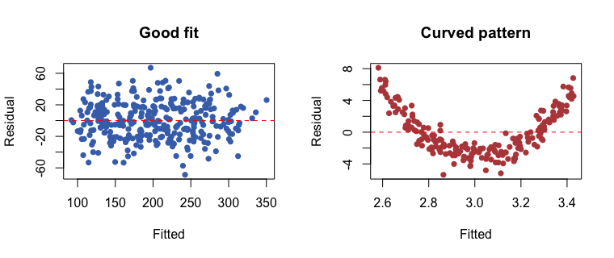

lm() と係数の意味
まず、前の回と同じ架空のマンション価格データ（400 件、価格の単位は千ドル）を作ります。価格 = 40 + 2.2×面積 + 12×部屋数 − 0.8×築年数 + 誤差、という関係をわざと入れてあります。
set.seed(670) n <- 400 apt <- data.frame(area = round(runif(n, 25, 120)), rooms = sample(1:4, n, replace = TRUE, prob = c(.2, .4, .3, .1)), age = round(runif(n, 0, 50))) apt$price <- round(40 + 2.2 * apt$area + 12 * apt$rooms - 0.8 * apt$age + rnorm(n, 0, 25), 1) # 1000 USD set.seed(1) idx <- sample(n, size = 0.8 * n) train <- apt[idx, ] test <- apt[-idx, ] fit <- lm(price ~ area + rooms + age, data = train) round(coef(fit), 2)
係数の読み方は、「他の変数を同じにして、その変数が 1 増えたとき、価格がどれだけ変わるか」です。面積が 1 m² 増えると価格は約 2.2（千ドル）上がり、築年数が 1 年増えると約 0.8 下がります。真の値（2.2、12、−0.8）に近い値が出ています。
round(summary(fit)$coefficients, 3)
Std. Error は係数の「ゆらぎの幅」、Pr(>|t|) はその係数が 0 かもしれない確率の目安です。ML では、これらの数字より、テストデータでの誤差の方を重視します。R²・RMSE・MAE と基準モデル
予測の良さは、テストデータで測ります。3 つの指標を、式から自分で計算してみましょう。
pred <- predict(fit, newdata = test) res <- test$price - pred rmse <- sqrt(mean(res^2)) # typical size of the error (same unit as price) mae <- mean(abs(res)) # less sensitive to big errors r2 <- 1 - sum(res^2) / sum((test$price - mean(test$price))^2) round(c(RMSE = rmse, MAE = mae, R2 = r2), 3)
| 指標 | 意味 | 目安 |
|---|---|---|
| RMSE | 予測の平均的なズレ（大きな誤差を重く見る） | 小さいほど良い。y の単位で読める |
| MAE | ズレの絶対値の平均 | 小さいほど良い。外れ値に強い |
| R² | 説明できたばらつきの割合 | 1 に近いほど良い。テストで見る |
RMSE が「良いか悪いか」は、基準モデルと比べて決めます。基準モデルは、「いつも訓練データの平均を答える」モデルです。
base_rmse <- sqrt(mean((test$price - mean(train$price))^2)) round(c(model = rmse, baseline = base_rmse), 1)
test に対する fit の予測を作り、MAE（絶対誤差の平均）を小数 2 桁で求めてください。
pred <- predict(fit, newdata = test) round(mean(abs(test$price - pred)), 2)
predict(fit, newdata = test) がテストの予測。残差の絶対値の平均が MAE。
残差を見る
残差（実測 − 予測）を予測値に対してプロットすると、モデルの弱点が見えます。良いモデルの残差は、0 のまわりに、パターンなくばらつきます。
par(mfrow = c(1, 2)) plot(fitted(fit), resid(fit), pch = 16, col = "#4471B8", xlab = "Fitted", ylab = "Residual", main = "Good fit") abline(h = 0, col = "red", lty = 2) # a curved relationship fitted with a straight line set.seed(5); x <- runif(200, -3, 3); y <- x^2 + rnorm(200) bad <- lm(y ~ x) plot(fitted(bad), resid(bad), pch = 16, col = "#B84848", xlab = "Fitted", ylab = "Residual", main = "Curved pattern") abline(h = 0, col = "red", lty = 2)

右の図の残差はU 字に並んでいます。真の関係は曲線（x²）なのに、直線を当てはめたため、モデルが捉えられなかった部分が残差に残ったのです。このようなパターンが見えたら、x² の項を足す、または木のモデルを試します。
| 残差のパターン | 意味 | 対策 |
|---|---|---|
| 0 のまわりにランダム | 良い | — |
| U 字・曲線 | 非線形の関係を取りこぼし | x² を足す、木モデル |
| 右に行くほど広がる | 大きい値ほど誤差が大きい | y を対数変換 |
標準化して係数を比べる
係数は単位に依存します（面積は m²、築年数は年）。「どの特徴が一番効くか」を比べるには、先に標準化します。標準化した列の係数は、「x が SD 1 つ分増えたときの y の変化」になります。
train_s <- as.data.frame(scale(train)) # every column: mean 0, SD 1 fit_s <- lm(price ~ area + rooms + age, data = train_s) round(coef(fit_s)[-1], 2)
面積（約 0.91）が圧倒的に強く、築年数（約 −0.19）と部屋数（約 0.17）は同じくらいです。元の係数だけを見ると「部屋数 11.6 が大きい」と錯覚しやすいのですが、部屋数は値の幅が小さいので、実際の影響は面積よりずっと小さくなります。
cor() で確認しましょう。